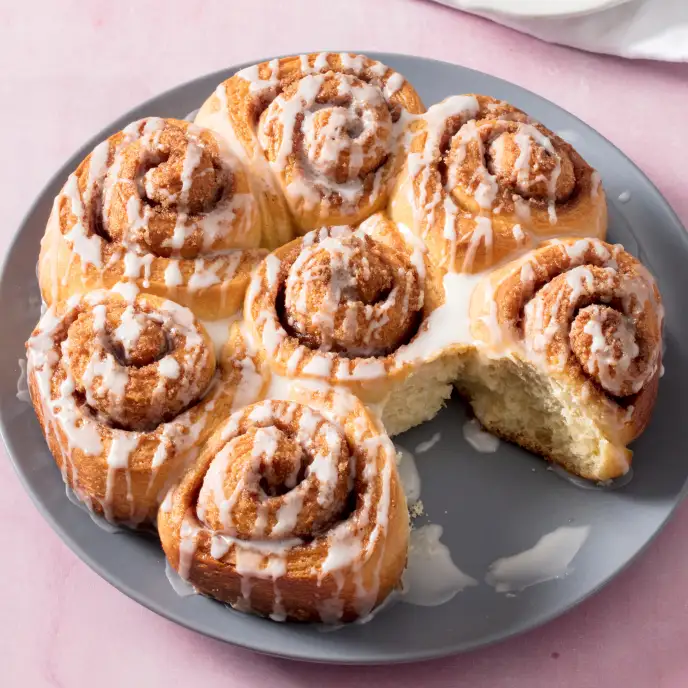

Cinnamon Rolls

Description
Delicious homemade cinnamon rolls that may take some time to make, but are definitely worth it!
Ingredients
- 180ml milk
- 7g package yeast
- 50g granulated sugar
- 1 egg plus 1 egg yolk
- 55g plus 55g plus 3 tablespoons of unsalted butter
- 370g bread flour
- pinch of salt
- 120g dark brown sugar
- 1.5 tablespoons of cinnamon
- 110g cream cheese
- 95g powdered sugar
- 0.5 teaspoon vanilla extract
Steps
- To make the dough, warm milk to 110F and add yeast. Melt 55g of butter. Once yeast is activated and bubbly,
add egg and egg yolk, sugar and melted butter. Mix well until combined, then add flour and sugar, and knead the dough
for 8 minutes. Form into a ball, let rise for at least an hour, or until doubled in size.
- Once the dough has doubled in size, roll it into a rectangle, about 36x24cm. Take the second 55g of butter that should be
at room temperature, and spread it evenly over the dough. Mix brown sugar with cinnamon, and sprinkle evenly on top.
Use your hands to gently push the sugar into the dough, so that it sticks to the butter.
- Roll the dough up starting from the 24cm side, and cut into 9 large rolls. Place them into a baking pan, cover with plastic wrap,
and let them rise for another 30-45 minutes. Preheat oven to 180C/350F, and bake the rolls for 20-25 mintes or until golden brown.
- To make the frosting, mix the remaining 3 tablespoons of butter at room temperature with cream cheese, powder sugar, and vanilla extract.
Mix well with an electric mixer, until smooth and fluffy.
- Let the cinnamon rolls cool at room temperature for 5-10 minutes, then spread the frosting over them, and enjoy!